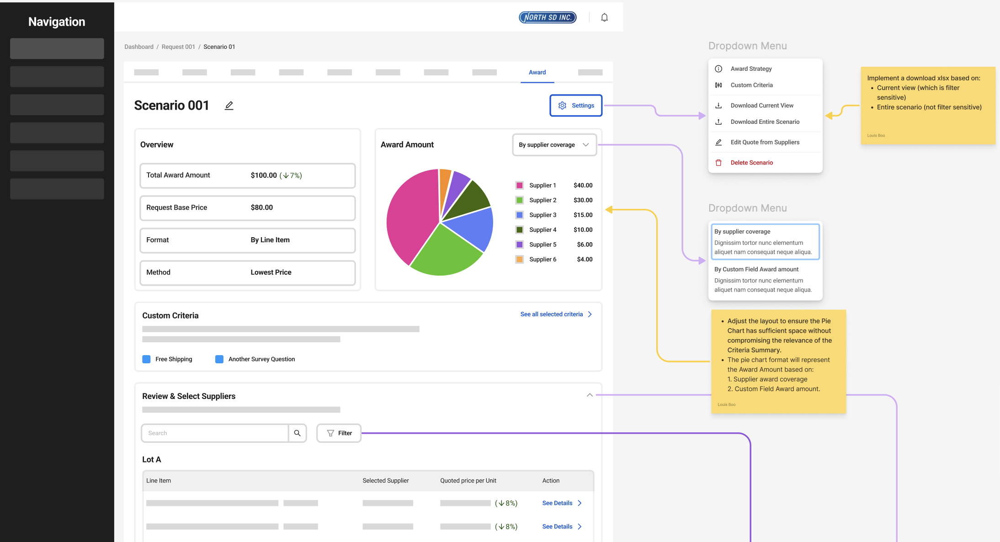
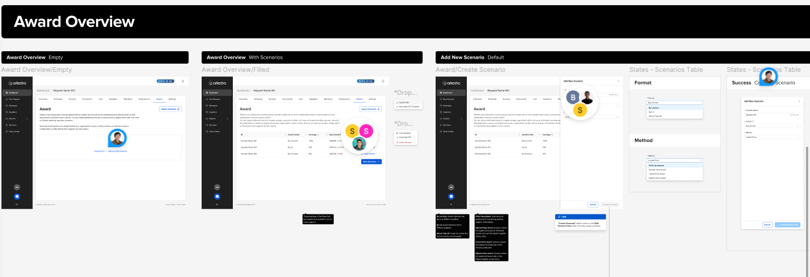
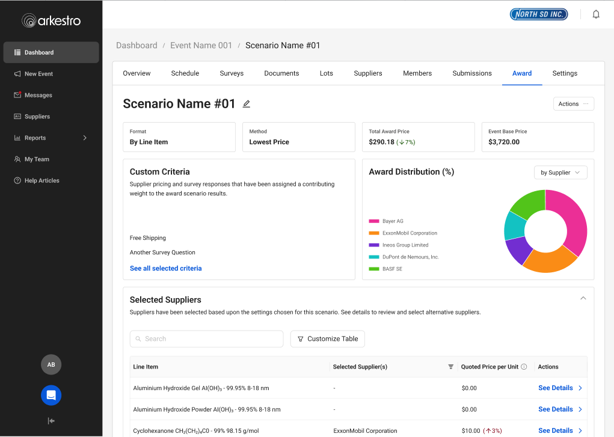
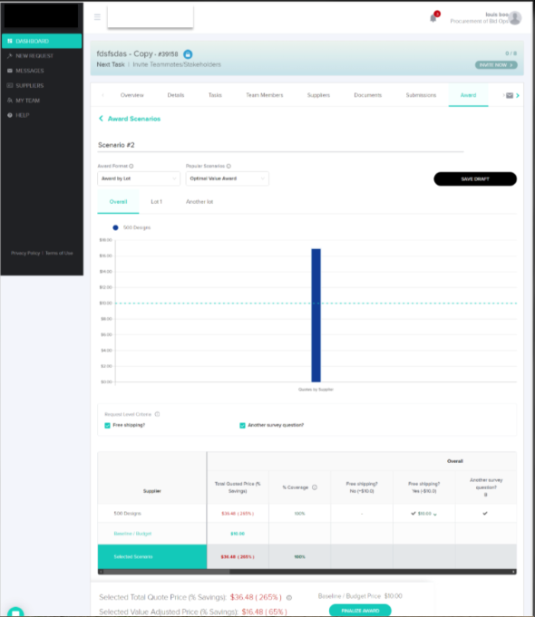
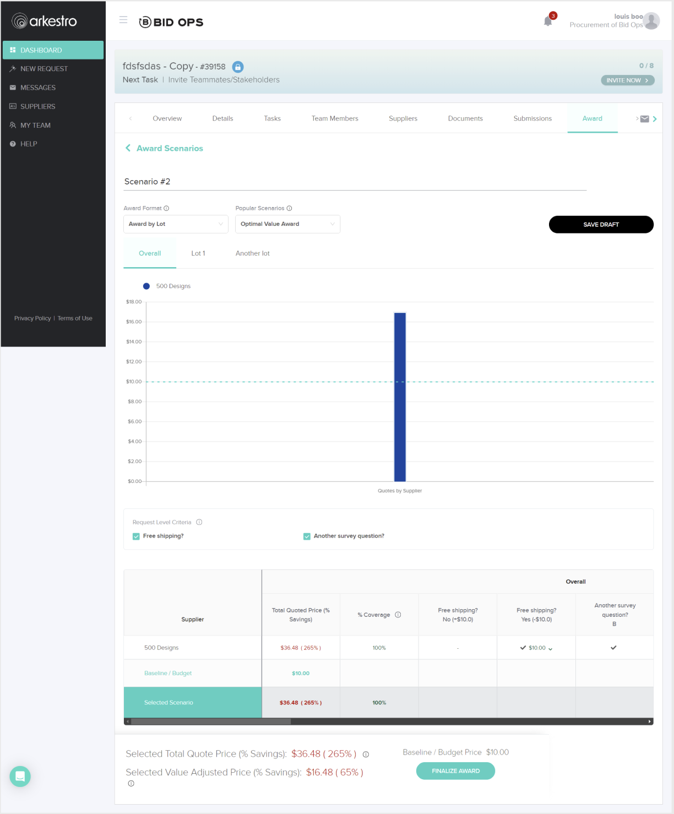

Situation
The Awarding experience allows buyers to select which supplier receives a contract. Despite being a critical step in the procurement workflow, the feature had low adoption and frequent user confusion. Support tickets were high and the enablement team was spending significant time helping users through this part of the process.
The interface had originally been built quickly before the company had dedicated UX resources. As a result, the page lacked a clear information hierarchy, the primary call to action was vague, and users often didn't trust the returned results. Buyers also had little visibility into what would happen after awarding a supplier, creating hesitation during a high-stakes decision.
Because the workflow didn't align with how buyers actually worked, many continued managing decisions in Excel-based tools — creating duplicate work by entering the same information in multiple places.

Task
My goal was to identify the sources of friction and redesign the awarding workflow so buyers could confidently complete the process within the platform.
In parallel, I worked with Product and stakeholders to define the business metrics for success. The initiative aimed to:
- Increase platform adoption
- Increase repeat usage
- Drive more spend through the platform
- Reduce the number of support sessions
- Enable split awarding
Research
To understand the task properly and make certain we were solving for the real problem, I conducted user interviews and workflow reviews to identify friction points and establish baseline metrics. I also recreated the existing interface in Figma and walked through the workflow with users and stakeholders, helping us pinpoint where confusion occurred and align on targeted improvements that fit within the existing roadmap.
Research began with conversations across both internal stakeholders and end users to ensure the final solution addressed real user needs while meeting business expectations.

The experience caused duplicate work, lacked a clear call to action, and often left users uncertain about what the page expected them to do.
As a result, many buyers avoided the platform or completed parts of the process elsewhere — most often in spreadsheets.Grounding the work in both user feedback and business goals helped create alignment across Product, UX, and Engineering, ensuring the team shared a clear understanding of the problem before moving into design.
A cross-functional design studio was conducted to promote transparency, increase contributions, and foster ownership. Screenshots were pulled into Figma and conversations were had with PM, UX, Devs, and end users to identify gaps in the existing experience.

Design Process
Low-Fidelity Mockups
Low-fidelity mockups were created to validate the problem with internal stakeholders first, confirming that all product requirements were met. I also ran these initial mockups by engineering leads to gauge feasibility.
Being a startup, one key learning was that engineers had traditionally had a heavier say in product design — based on what was easiest and fastest to build. It took interpersonal effort to gain their trust while still advocating for users. I introduced more design crits and feedback sessions to promote trust and transparency. The result: a better working relationship and a team that flagged gaps earlier.

High-Fidelity Mockups
High-fidelity mockups were tested with internal and external users, featuring:
- Improved information architecture — clearer hierarchy so users could find what they needed
- Improved calls to action — users knew exactly what they were supposed to do next
- Award distribution infographics — showing which suppliers were getting how much spend, shareable with internal partners

Design Tradeoffs
This work required balancing the needs of two very different user groups — light users who needed guidance and reassurance, and power users who valued speed and efficiency. Because awarding is a high-stakes decision, I prioritized clarity and confidence over raw efficiency, even if it introduced more structure to the workflow.
I also needed to increase trust in the system without overwhelming users, so I focused on surfacing high-signal insights rather than exposing all underlying data. Moving to a more guided, opinionated flow reduced flexibility somewhat, but significantly improved completion rates and reduced support needs.
New features like split awarding added complexity, so I used progressive disclosure to keep the experience manageable. I also leaned on familiar patterns — like Excel — to ease adoption while gradually shifting users into completing the workflow within the platform.

Rollout
After high-fidelity designs were implemented, I released the new awarding workflow to a small group of beta customers to monitor adoption and completion rates while gathering feedback from buyers and the enablement team. Early signals were encouraging — more buyers were completing awards directly in the platform instead of relying on Excel workflows.
The beta also surfaced a few remaining points of confusion. Based on feedback and support conversations, I made small adjustments to labeling and guidance before rolling out more broadly.

Outcomes & Impact
What We Learned
Better metrics gathering was needed to show quantitative changes after feature rollout. From this project, we identified new metrics to use when starting future initiatives: average time to complete an award, number of support tickets, and amount of spend through the platform.
This was also the single largest feature the company had introduced to that point. We identified gaps in how the balanced team of Product, UX, and Engineering worked and immediately set about changing things — including color-coded Figma files to show dev-ready status at a glance, and pre-refinement meetings with UX, PM, and a Dev lead to balance desirability and feasibility.